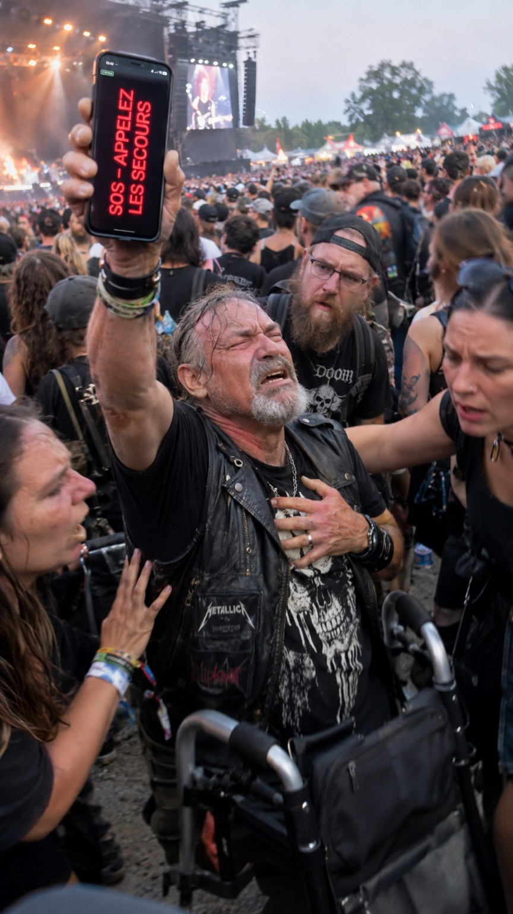

🚨💀 HELLXBONE SIGNAL : QUAND LE SILENCE PEUT SAUVER UNE VIE ! 🤘🔥

🎸 Imagine la scène… Tu es en plein festival de metal. Les guitares hurlent, les basses explosent et la foule est immense. 🔊🤘
😰 Soudain, quelque chose ne va pas : malaise, vertiges, douleur, difficulté à respirer ou problème lié à ton handicap.
🆘 TU AS BESOIN D’AIDE. IMMÉDIATEMENT !
Mais comment te faire comprendre quand personne ne peut t’entendre ?
🔥 HELLXBONE SIGNAL : COMMUNIQUER SANS PARLER
📱 J’ai développé une nouvelle fonctionnalité dans HELLXBONE CLUB pour communiquer sans prononcer un mot, même au milieu de milliers de festivaliers.
⚡ Ton smartphone devient un panneau de communication visuelle : des messages en très gros caractères et des signaux lumineux pour attirer les regards.
🚨 Un message SOS visible peut alerter les personnes autour de toi. Plus besoin de hurler pour essayer de se faire comprendre !
🚑 QUAND QUELQUES SECONDES PEUVENT FAIRE LA DIFFÉRENCE
♿ Une personne handicapée peut se retrouver bloquée. 😵 Une personne victime d’un malaise peut être incapable de parler. 🫁 Une personne en difficulté respiratoire peut ne plus avoir la force d’appeler à l’aide.
👀 Un festivalier remarque le message, 🤝 des personnes interviennent, 🚑 les secours sont alertés. HELLXBONE SIGNAL peut faciliter ce premier contact.
♿🔥 UNE IDÉE NÉE DE MON PROPRE HANDICAP
Je suis artiste, passionné de rock et de metal, et reconnu handicapé à plus de 80 %. Je connais les difficultés de déplacement, les problèmes d’équilibre et les obstacles que peut représenter une foule.
🤘 LE METAL EST POUR TOUT LE MONDE ! Je refuse que le handicap soit synonyme d’exclusion des concerts et des festivals.
🤘🔊 POUR TOUT LE MONDE
🦻 HELLXBONE SIGNAL peut être utile aux personnes sourdes ou malentendantes, aux personnes ayant des difficultés pour parler et à n’importe quel festivalier dans un environnement très bruyant.
💀❤️ LE METAL, C’EST AUSSI UNE IMMENSE FAMILLE !
Dans un pogo, quand quelqu’un tombe, on le relève. Avec HELLXBONE SIGNAL, je veux prolonger cet esprit d’entraide.
❤️ Si cette fonctionnalité contribue un jour à faire secourir quelqu’un plus rapidement, elle aura déjà accompli quelque chose d’essentiel.
⚠️ HELLXBONE SIGNAL n’est pas un dispositif médical et ne remplace pas les secours : en cas d’urgence, appelle le 15 ou le 112. Les flashs lumineux rapides peuvent présenter un risque pour les personnes photosensibles.
🚨📱 FAIS-TOI VOIR QUAND TU NE PEUX PLUS TE FAIRE ENTENDRE !
🤘 Fred — Créateur de HELLXBONE